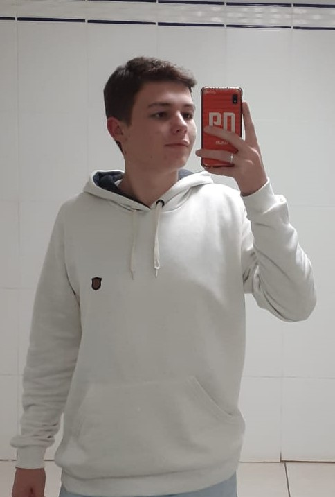

Olá! Sou Kerlon Hinterholz Desenvolvedor Web Front-end
Desenvolvedor web com mais de um ano de experiência em desenvolvimento de aplicações web escaláveis e responsivas. Sou apaixonado por criar soluções tecnológicas que resolvem problemas reais e que agregam valor aos usuários.
Saiba Mais!
